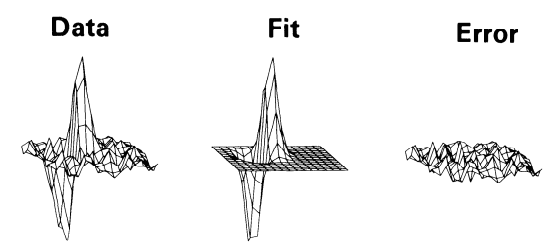
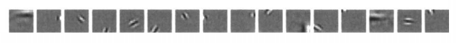
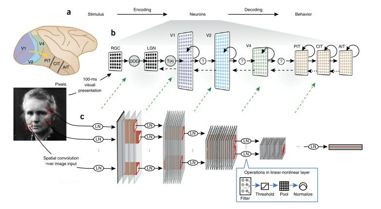
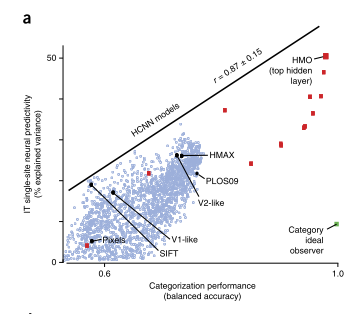

The skeleton of this short review is mainly based on Using goal-driven deep learning models to understanding sensory cortex
Introduction
One ultimate goal of the Neuroscience is to predict the reponse of even a single neuron, given a particular stimulus (i.e. how the neuron encode the information). In terms of this goal, visual cortex is probably the most well-understood cortex. Therefore this short review will start from brief biological introduction to the central visual pathway. Then move to how the traditional methods taken efforts in making predition of the response. However, these traditional method failed to predict the response of neurons in higher order of cortex region, such as in V4 or inferior temporal (IT) cortex. Therefore, in section 3, we introduce a generative model: Hierachical Convolutional Neural Networks (HCNN), equip it with goal-driven philosiphy, to obtain pretty good predition even with higher order of cortex region. The final section includes some potentials and limitations of this HCNN $+$ goal-driven method.
Central Visual Pathway
Central visual pathway means how the information of the images (represented by photons) is converted into the electric signal, and be transmitted in the cortex.
The photons firstly hit the retina in our eyes, change the conductance of the channels in our photo-receptors, thus change strength the electuric signals. This signals is transmitted by ganglion cells along the optic nerve to reach the Lateral geniculate nucleus (LGN) in the thalamus (FIG. 1). Optic radiation radiate the signals in LGN to the V1 cortex in the most posterior of the occipital lobe. Now there are basicaly two pathway for the signal to travel. (FIG.) [S. Williams & L. White, 2013]
- Dorsal pathway: V1, V2, V3, V3A and MT etc. This pathway is thought of responsible for the “where” problem: what is the positional relation of the objects in the image, in which direction does the object move…
- Ventral pathway: V1, V2, V4 and IT etc. This pathway is thought of responsible for the “what” problem, such as object recogization.
One goal of today’s neuroscience is to understanding how the neurons in the above regions response to different stimulus (i.e. images). More formally, the stimulus is a matrix $S$, with each entry represents the photon density, the questions finding the firing rate of the neurons in a very small regions (so they can be thought of react to the stimulus homogenusly) $r$ as a function of matrix $S$.
Traditional Method
Gabor wavelet filter
The most straight forward model of the above problem is receptive field
\begin{equation}
r = \sum_{i,j} R_{i,j}S_{i,j}
\end{equation} where $R$ is the receptive field. It can be either a matrix (descret positions) or function R(x, y) (continum positions). According to some observation, JP Jones etal in year 1987 propsed that R is actually a gabor wavelet [J Jones & L Palmer]
\begin{equation}
R(x, y) = K \text{exp}(-1/2(x_g^2 / a^2 + y_g^2 / b^2)) \text{cos}(-2\pi(U_0x + V_0y) - P),
\label{gaborwave}
\end{equation} where $x_g$ and $y_g$ are the rotation transfomation of the original coordinate space
\begin{equation}
x_g = x \text{cos}(\theta) - y \text{sin}(\theta);
y_g = x \text{sin}(\theta) + y \text{cos}(\theta)
\end{equation} The rest of parameters in equation (\ref{gaborwave}) are constant.
The fitting result shows pretty good result of the neurons in the V1 cortex (FIG.3) However, this method only tells what the receptive field should look like, but didn’t clearly expain why they should be gabor wavelet.
Learning the Neural Response via Efficient Coding
On the contrary, efficient coding could give a clearer biological meaning. An interpretation of the function of neurons is that, different neurons are developed to capture different aspects of the images. For example, neuron 1 will only detect the image information in the horizonal direction, neuron 2 will only look at into the infomation in another direction. So neurons could actually tears the original image into some simple parts which is easier for further analysing. Actually this idea could be achieved by gabor function: the response via different gabor wavelet filters can indeed capture different aspects of the original image. Yet efficient coding is a more powerful method because it could learn the response automatically.
With the above idea, the image can be represented by a set of basis [BOlshausen & D. Field, 1996]
\begin{equation}
S(x, y) = \sum_{i} a_i \phi_i(x, y).
\end{equation} where index $i$ represents neuron $i$. Our brain must evolved at some point between the ability (how well we can understand the image) and economy (it should take as fewer neurons as possible). This two aspects hint us to write down the following loss function
\begin{equation}
L = - [\text{perserve information}] - \lambda [\text{sparseness of $a_i$}]
\label{lossinfo}
\end{equation} where $\lambda$ controls the importance of economy. Perserve information could be the L2 error
\begin{equation}
[\text{perserve information}] = - [S(x, y) - \sum_{i} a_i \phi_i(x, y)]^2
\end{equation} and
\begin{equation}
[\text{sparseness of $a_i$}] = - \sum_i S(\frac{a_i}{\sigma})
\end{equation}
Equation (\ref{lossinfo}) can be minimized though gradient descent. We could use nature scence as the traning set, and do the unsupervised learning so could obtain the basis (FIG. 4). It correctly shows how different neurons capture different aspects of the original image.
Fitting Networks to Neural Data
This method is even more straightforward. We could obtain the stimulus and the response of the neurons from the experiment, therefore we could link this two quantities directlly though some statistics method. This method apears to be succesful in visual area V1, auditory area A1 etc. [R deCharms and A Zador, 2000]
Difficulties with Deeper Networks
The above models are successful in the primary cortex (V1). However, the higher order region like V4 apears to be too complex so that either asumptions in the above method become invalid nor too difficult to fit due to the too many parameters. Therefore new method is needed.
HCNN and Goal-driven Method
Although we don’t exactly know how neurons in the cortex wiring together, we could roughly divide cortex into layers (under the meaning of connections, not anatomy relation). For example, V1, V2 are different layers. There are infomation flows between layers to layers. One good anology of the cotex is Hierachical Convolutional Neural Networks (FIG. 5). Each entry in one layers is a number, corresponds to the firing rate of one small region of neurons. Layers are connected though linear-non-linear (LN) operation: filter, threshold, pool and normalize. Each sub-operation can roughly corresponds to some features of the cortex. For example, threshold is the activation function of one neuron under a stimulus.
HCNN contains majorly two kinds of parameters: 1. discrete paramters, includ the number of layers, shape of the filters etc. 2. continuous paramters, the weights on the filter and fully connected layers.
From the traditional method, we know it is difficult to findout the stimulus-response relation. Therefore in goal-driven method, we temperally don’t consider this problem. Instead, we consider how to use HCNN to reproduce the cognitive ability, for example, in ventral visual patheway, how to recognize objects. The parameters above are configured by optimizing the performance of the cognitive abilitt. Surperising, if we detect the response of the neurons in hidden layer, it will give good prediction of how the real neuron response (FIG. 5).
The most powerful aspect of HCNN I think is that, it can unify different sensory cortex into one architechture. HCNN is not only applicable to visual cortex, but with some modification, also applicable to auditory cortex. This implies that our brain was actually a giant, simple HCNN. The evolution force us to “learn” the exact parameters to achieve different congnative ability. Actually, if part of funtion in our brain is injured, we could possible use the other part of the brain to perform the same task, which means the cortex specialied in one function can smoothly transformed into another specialization. [S. Carron ect.]
Disscusion
Most of the potential and limitations are discussed in [D Yamins ectal., 2018]. Here I would only add some points.
The most limitation of the HCNN I suppose is the architechture. Convolution apears only for some invariant properties in the image. It is likely that “filter” neurons developed same parameters, so that we could use single filter to replace them. However, there’s no reason that the other sensory cotex have some similar symmetry. Further, recurrent seems exist everywhere in the cortex, yet this important feature is not inclued in the HCNN model. Therefore better understanding on how to coorperate RNN in the brain to the machine learning algorithm is needed. [G Yang & X Wang, 2020]
Further, even we could reproduce the response of neuron via HCNN model, we still don’t know why they response like that. HCNN model, unfortrunately lack of good interpretability. This is related to the long existing reverse engineering problem.
Image Ref
[1] S. Williams & L. White, 2013
[2] J Jones & L Palmer
[3] BOlshausen & D. Field, 1996
[4] BOlshausen & D. Field, 1996